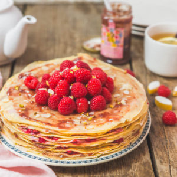

Gâteau de crêpes framboises et calisson

Aujourd’hui je vous retrouve avec un gâteau de crêpes car il parait que c’est bientôt la chandeleur ;)! Cette année la gâteau de crêpes sera aux framboises et aux calissons pour faire honneur à ma nouvelle région ♥
Après l’énorme gâteau de crêpes chocolat banane me voici avec une version un plus colorée, un peu moins haute mais tout aussi gourmande. Le hasard fait très bien les choses car deux mois avant de déménager à Marseille, la très célèbre marque de Calisson « le Roy René » m’avait contacté pour que je réalise pour eux un livret de recettes pour leurs différentes boutiques. Autant vous dire que j’ai sauté sur l’occasion car en plus d’être un super projet, j’ai pu découvrir certains produits que je ne connaissais pas comme cette délicieuse confiture de framboise et crème de calisson 😉 . Comme je me doute bien que tous mes lecteurs ne sont pas concentrés dans une seule partie de la France et que vous n’avez pas tous accès aux boutiques du Roy René pour lire le livret de recette j’ai décidé de partager avec vous tout au long de l’année les petites gourmandises que j’ai concocté pour eux.
A l’occasion de la chandeleur qui arrive parait-il à grand pas, je vous présente donc cette recette toute simple (et pourtant on ne pense pas toujours à cuisiner les crêpes de cette façon) de gâteau de crêpes à la confiture de framboise et de calisson. Ce n’est pas la saison des framboises mais picard est souvent mon meilleur ami quand j’ai besoin de fruits hors saison et pour le coup la qualité est toujours au rendez vous! Pour cette recette, il faudra simplement faire suffisamment de crêpes (c’est clairement l’étape la plus longue de la recette!!), tartiner ensuite les crêpes de confitures, ajouter des morceaux de framboises et des brisures de calissons, servir un thé ou un chocolat et le tour est joué! Je vous laisse avec cette recette simplissime mais pourtant si bonne et je vous dis à très très vite♥
Ingrédients
- Farine - 450g
- Œufs - 5
- Cassonade - 2càs
- Vergeoise blonde - 2càs
- Lait - 850ml
- Beurre - 25g
- Citron - 1
- Framboises - 2 poignées (pour la garniture + déco)
- Confiture framboise calisson le Roy Rene - 1 pot
- Calissons - 2-3
- Amandes effilées grillées - 1càs
- Pistaches concassées - 1càs
Instructions
- Dans un saladier, versez la farine le sucre et la vergeoise
- Mélangez
- Faites un puits
- Cassez les œufs dans le puits
- Versez le lait petit à petit tout en fouettant les œufs et en ramenant la farine vers le centre
- Faites fondre le beurre et ajoutez-le à la pâte
- Ajoutez les zestes du citron et mélangez à nouveau
- Laisser reposer 1 heure
- Faire cuire les crêpes 1 à 2 minutes de chaque côté dans une poêle antiadhésive
- Découpez une grosse poignée de framboises en petits morceaux
- Montez votre gâteau de crêpes en tartinant une crêpe sur deux de confiture
- Pour celles sans confiture déposez quelques morceaux de framboises
- Procédez ainsi de suite jusqu’à épuisement des crêpes
- Tartinez la dernière crêpe de confiture et déposez une dizaine de framboises fraîches au centre
- Ajoutez des amandes grillées, des morceaux de pistache et quelques brisures de calissons
- Conservez au frais jusqu’au moment de servir
Les tips de la communauté
Création très originale et appétissante très bien reçue par les lecteurs. Les retours soulignent la beauté visuelle et la saveur gourmande du gâteau.
Astuces
- Utiliser des framboises surgelées de qualité (marque Picard) en dehors de la saison
- La confiture framboises-calisson est une découverte intéressante
Ajustements signalés
- vraiment qu’il soit essayé chez moi !